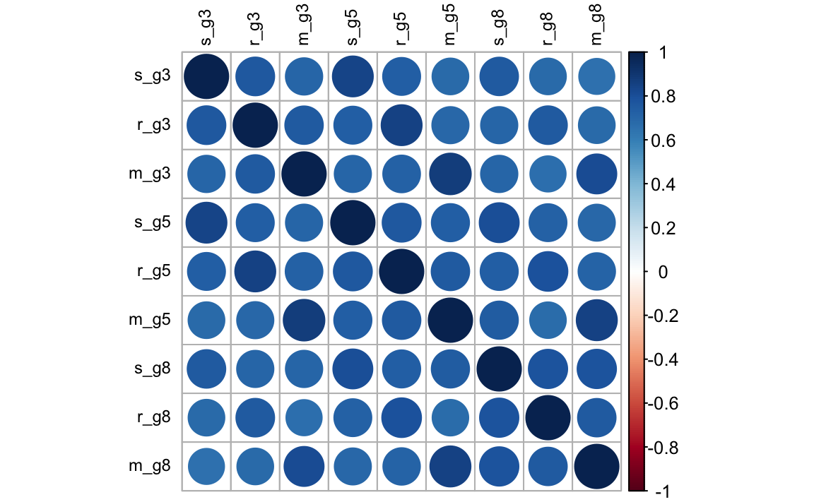

37.2 Un esempio concreto
Questo tutorial segue l’esempio del Capitolo 14 di Grimm, Ram, and Estabrook (2016). Utilizzando dati relativi a 3 misurazioni dell’ECLS-K, testiamo l’invarianza fattoriale e poi usiamo un modello di crescita latente di secondo ordine per descrivere il cambiamento nei punteggi fattoriali nel tempo.
Carichiamo i pacchetti necessari.
Leggiamo i dati.
filepath <- "https://raw.githubusercontent.com/LRI-2/Data/main/GrowthModeling/ECLS_Science.dat"
# read in the text data file using the url() function
dat <- read.table(file = url(filepath), na.strings = ".")
names(dat) <- c(
"id", "s_g3", "r_g3", "m_g3", "s_g5", "r_g5", "m_g5", "s_g8",
"r_g8", "m_g8", "st_g3", "rt_g3", "mt_g3", "st_g5", "rt_g5",
"mt_g5", "st_g8", "rt_g8", "mt_g8"
)
# selecting only the variables of interest
dat <- dat[, c(
"id", "s_g3", "r_g3", "m_g3", "s_g5", "r_g5", "m_g5", "s_g8",
"r_g8", "m_g8"
)]
head(dat, 10)
#> id s_g3 r_g3 m_g3 s_g5 r_g5 m_g5 s_g8 r_g8 m_g8
#> 1 1 NA NA NA NA NA NA NA NA NA
#> 2 3 NA NA NA NA NA NA NA NA NA
#> 3 8 NA NA NA NA NA NA 103.90 204.10 166.67
#> 4 16 51.57 142.18 115.59 65.94 141.02 133.67 86.90 169.83 156.67
#> 5 28 NA NA NA NA NA NA NA NA NA
#> 6 44 NA NA NA NA NA NA NA NA NA
#> 7 46 72.09 154.43 96.87 79.44 170.57 116.28 89.08 192.07 132.40
#> 8 62 34.71 106.40 87.86 47.44 145.72 104.68 NA NA NA
#> 9 66 NA NA NA NA NA NA NA NA NA
#> 10 74 62.94 126.06 92.47 73.70 145.17 124.73 92.67 193.43 133.93Otteniamo le statistiche descrittive.
psych::describe(dat[, -1]) #-1 to remove the id column
#> vars n mean sd median trimmed mad min max range skew
#> s_g3 1 1442 50.99 15.62 50.94 50.82 16.76 18.37 92.66 74.29 0.08
#> r_g3 2 1430 127.66 29.22 126.97 128.44 31.33 51.46 195.82 144.36 -0.21
#> m_g3 3 1442 99.72 25.54 102.60 99.99 27.71 35.72 159.40 123.68 -0.10
#> s_g5 4 1135 65.25 16.18 67.53 65.99 16.52 22.57 103.23 80.66 -0.39
#> r_g5 5 1133 151.09 27.31 152.33 153.10 26.73 64.69 202.22 137.53 -0.62
#> m_g5 6 1136 124.35 25.17 128.64 126.08 25.14 50.87 169.53 118.66 -0.58
#> s_g8 7 947 84.89 16.71 88.93 86.88 14.81 29.61 107.90 78.29 -0.99
#> r_g8 8 941 172.05 27.73 179.70 175.54 24.91 89.15 208.44 119.29 -0.98
#> m_g8 9 945 142.47 22.50 147.36 145.07 21.23 67.75 172.20 104.45 -0.94
#> kurtosis se
#> s_g3 -0.59 0.41
#> r_g3 -0.50 0.77
#> m_g3 -0.70 0.67
#> s_g5 -0.49 0.48
#> r_g5 -0.04 0.81
#> m_g5 -0.24 0.75
#> s_g8 0.48 0.54
#> r_g8 0.24 0.90
#> m_g8 0.36 0.73Calcoliamo le correlazioni.
round(cor(dat[, -1], use = "pairwise.complete"), 2)
#> s_g3 r_g3 m_g3 s_g5 r_g5 m_g5 s_g8 r_g8 m_g8
#> s_g3 1.00 0.76 0.71 0.85 0.73 0.68 0.75 0.68 0.66
#> r_g3 0.76 1.00 0.75 0.73 0.85 0.70 0.70 0.76 0.68
#> m_g3 0.71 0.75 1.00 0.70 0.72 0.88 0.71 0.66 0.81
#> s_g5 0.85 0.73 0.70 1.00 0.77 0.74 0.81 0.73 0.70
#> r_g5 0.73 0.85 0.72 0.77 1.00 0.75 0.74 0.80 0.71
#> m_g5 0.68 0.70 0.88 0.74 0.75 1.00 0.74 0.68 0.85
#> s_g8 0.75 0.70 0.71 0.81 0.74 0.74 1.00 0.78 0.78
#> r_g8 0.68 0.76 0.66 0.73 0.80 0.68 0.78 1.00 0.75
#> m_g8 0.66 0.68 0.81 0.70 0.71 0.85 0.78 0.75 1.00corrplot(cor(dat[, -1], use = "pairwise.complete"), order = "original", tl.col = "black", tl.cex = .75)
37.2.1 Modello di invarianza configurale
Il modello di invarianza configurale impone pochi vincoli sulla struttura del fattore nel tempo. L’unico vincolo è che il numero di fattori e la struttura delle saturazioni fattoriali siano uguali nelle diverse occasioni di misurazione. Definiamo un fattore “rendimento accademico” per ciascuna delle 3 occasioni, utilizzando le variabili di matematica, scienze e lettura relative a quella misurazione temporale.
Anche se il fattore comune può essere interpretato in modo simile in ciascuna occasione di misurazione (ad esempio, chiamato “rendimento accademico”), questo modello non impone o assume che i fattori specifici per il tempo misurino lo stesso costrutto o che siano misurati sulla stessa scala.
Definiamo il modello nella sintassi di lavaan.
configural_invar <- " #opening quote
#factor loadings
eta1 =~ lambda_S*s_g3+ #for identification
lambda_R3*r_g3+
lambda_M3*m_g3
eta2 =~ lambda_S*s_g5+ #for identification
lambda_R5*r_g5+
lambda_M5*m_g5
eta3 =~ lambda_S*s_g8+ #for identification
lambda_R8*r_g8+
lambda_M8*m_g8
#latent variable variances
eta1~~1*eta1 #for scaling
eta2~~eta2
eta3~~eta3
#latent variable covariances
eta1~~eta2
eta1~~eta3
eta2~~eta3
#unique variances
s_g3~~s_g3
s_g5~~s_g5
s_g8~~s_g8
r_g3~~r_g3
r_g5~~r_g5
r_g8~~r_g8
m_g3~~m_g3
m_g5~~m_g5
m_g8~~m_g8
#unique covariances
s_g3~~s_g5
s_g3~~s_g8
s_g5~~s_g8
r_g3~~r_g5
r_g3~~r_g8
r_g5~~r_g8
m_g3~~m_g5
m_g3~~m_g8
m_g5~~m_g8
#latent variable intercepts
eta1~0*1 #for scaling
eta2~1
eta3~1
#observed variable intercepts
s_g3~tau_S*1
s_g5~tau_S*1
s_g8~tau_S*1
r_g3~tau_R3*1
r_g5~tau_R5*1
r_g8~tau_R8*1
m_g3~tau_M3*1
m_g5~tau_M5*1
m_g8~tau_M8*1
" # closing quoteAdattiamo il modello ai dati.
Esaminiamo la soluzione.
summary(fit_configural, fit.measures = TRUE)
#> lavaan 0.6.15 ended normally after 281 iterations
#>
#> Estimator ML
#> Optimization method NLMINB
#> Number of model parameters 43
#> Number of equality constraints 4
#>
#> Used Total
#> Number of observations 1478 2108
#> Number of missing patterns 24
#>
#> Model Test User Model:
#>
#> Test statistic 35.522
#> Degrees of freedom 15
#> P-value (Chi-square) 0.002
#>
#> Model Test Baseline Model:
#>
#> Test statistic 11669.413
#> Degrees of freedom 36
#> P-value 0.000
#>
#> User Model versus Baseline Model:
#>
#> Comparative Fit Index (CFI) 0.998
#> Tucker-Lewis Index (TLI) 0.996
#>
#> Robust Comparative Fit Index (CFI) 0.998
#> Robust Tucker-Lewis Index (TLI) 0.995
#>
#> Loglikelihood and Information Criteria:
#>
#> Loglikelihood user model (H0) -41918.095
#> Loglikelihood unrestricted model (H1) -41900.334
#>
#> Akaike (AIC) 83914.190
#> Bayesian (BIC) 84120.830
#> Sample-size adjusted Bayesian (SABIC) 83996.938
#>
#> Root Mean Square Error of Approximation:
#>
#> RMSEA 0.030
#> 90 Percent confidence interval - lower 0.018
#> 90 Percent confidence interval - upper 0.043
#> P-value H_0: RMSEA <= 0.050 0.994
#> P-value H_0: RMSEA >= 0.080 0.000
#>
#> Robust RMSEA 0.037
#> 90 Percent confidence interval - lower 0.021
#> 90 Percent confidence interval - upper 0.053
#> P-value H_0: Robust RMSEA <= 0.050 0.897
#> P-value H_0: Robust RMSEA >= 0.080 0.000
#>
#> Standardized Root Mean Square Residual:
#>
#> SRMR 0.008
#>
#> Parameter Estimates:
#>
#> Standard errors Standard
#> Information Observed
#> Observed information based on Hessian
#>
#> Latent Variables:
#> Estimate Std.Err z-value P(>|z|)
#> eta1 =~
#> s_g3 (lm_S) 13.269 0.339 39.163 0.000
#> r_g3 (l_R3) 26.301 0.627 41.921 0.000
#> m_g3 (l_M3) 21.601 0.553 39.074 0.000
#> eta2 =~
#> s_g5 (lm_S) 13.269 0.339 39.163 0.000
#> r_g5 (l_R5) 22.745 0.698 32.598 0.000
#> m_g5 (l_M5) 20.066 0.631 31.789 0.000
#> eta3 =~
#> s_g8 (lm_S) 13.269 0.339 39.163 0.000
#> r_g8 (l_R8) 21.663 0.753 28.763 0.000
#> m_g8 (l_M8) 17.259 0.593 29.129 0.000
#>
#> Covariances:
#> Estimate Std.Err z-value P(>|z|)
#> eta1 ~~
#> eta2 1.034 0.021 49.169 0.000
#> eta3 1.050 0.029 36.246 0.000
#> eta2 ~~
#> eta3 1.176 0.048 24.703 0.000
#> .s_g3 ~~
#> .s_g5 34.822 3.060 11.379 0.000
#> .s_g8 14.743 3.006 4.904 0.000
#> .s_g5 ~~
#> .s_g8 18.619 3.177 5.861 0.000
#> .r_g3 ~~
#> .r_g5 82.590 9.155 9.021 0.000
#> .r_g8 54.235 9.416 5.760 0.000
#> .r_g5 ~~
#> .r_g8 60.822 9.129 6.663 0.000
#> .m_g3 ~~
#> .m_g5 123.727 8.135 15.208 0.000
#> .m_g8 82.025 6.914 11.864 0.000
#> .m_g5 ~~
#> .m_g8 91.527 7.139 12.821 0.000
#>
#> Intercepts:
#> Estimate Std.Err z-value P(>|z|)
#> eta1 0.000
#> eta2 1.040 0.033 31.645 0.000
#> eta3 2.435 0.068 35.961 0.000
#> .s_g3 (ta_S) 51.013 0.407 125.219 0.000
#> .s_g5 (ta_S) 51.013 0.407 125.219 0.000
#> .s_g8 (ta_S) 51.013 0.407 125.219 0.000
#> .r_g3 (t_R3) 127.260 0.772 164.876 0.000
#> .r_g5 (t_R5) 126.654 0.997 127.087 0.000
#> .r_g8 (t_R8) 116.432 1.678 69.373 0.000
#> .m_g3 (t_M3) 99.744 0.668 149.395 0.000
#> .m_g5 (t_M5) 102.902 0.908 113.381 0.000
#> .m_g8 (t_M8) 98.540 1.315 74.929 0.000
#>
#> Variances:
#> Estimate Std.Err z-value P(>|z|)
#> eta1 1.000
#> eta2 1.160 0.046 25.220 0.000
#> eta3 1.329 0.069 19.227 0.000
#> .s_g3 67.122 3.535 18.989 0.000
#> .s_g5 63.195 3.842 16.447 0.000
#> .s_g8 53.716 4.113 13.059 0.000
#> .r_g3 180.361 11.527 15.647 0.000
#> .r_g5 162.710 10.586 15.371 0.000
#> .r_g8 185.198 12.274 15.089 0.000
#> .m_g3 187.384 9.448 19.833 0.000
#> .m_g5 176.465 9.534 18.510 0.000
#> .m_g8 126.219 7.760 16.265 0.000Generiamo il diagramma di percorso.
37.2.2 Modello di invarianza debole
Il modello di invarianza debole impone che la matrice di saturazioni fattoriali sia identica in tutte le occasioni di misurazione. Questo implica che le strutture di covarianza nel tempo siano proporzionali. Tuttavia, il modello permette che le intercette delle variabili osservate possano variare nel tempo e quindi non consente di esaminare il cambiamento longitudinale del fattore.
Definiamo il modello usando la sintassi di lavaan.
weak_invar <- " #opening quote
#factor loadings
eta1 =~ lambda_S*s_g3+ #removed time-specific subscripts
lambda_R*r_g3+
lambda_M*m_g3
eta2 =~ lambda_S*s_g5+
lambda_R*r_g5+
lambda_M*m_g5
eta3 =~ lambda_S*s_g8+
lambda_R*r_g8+
lambda_M*m_g8
#latent variable variances
eta1~~1*eta1
eta2~~eta2
eta3~~eta3
#latent variable covariances
eta1~~eta2
eta1~~eta3
eta2~~eta3
#unique variances
s_g3~~s_g3
s_g5~~s_g5
s_g8~~s_g8
r_g3~~r_g3
r_g5~~r_g5
r_g8~~r_g8
m_g3~~m_g3
m_g5~~m_g5
m_g8~~m_g8
#unique covariances
s_g3~~s_g5
s_g3~~s_g8
s_g5~~s_g8
r_g3~~r_g5
r_g3~~r_g8
r_g5~~r_g8
m_g3~~m_g5
m_g3~~m_g8
m_g5~~m_g8
#latent variable intercepts
eta1~0*1
eta2~1
eta3~1
#observed variable intercepts
s_g3~tau_S*1
s_g5~tau_S*1
s_g8~tau_S*1
r_g3~tau_R3*1
r_g5~tau_R5*1
r_g8~tau_R8*1
m_g3~tau_M3*1
m_g5~tau_M5*1
m_g8~tau_M8*1
" # closing quoteAdattiamo il modello ai dati.
Esaminiamo la soluzione.
summary(fit_weak, fit.measures = TRUE)
#> lavaan 0.6.15 ended normally after 208 iterations
#>
#> Estimator ML
#> Optimization method NLMINB
#> Number of model parameters 43
#> Number of equality constraints 8
#>
#> Used Total
#> Number of observations 1478 2108
#> Number of missing patterns 24
#>
#> Model Test User Model:
#>
#> Test statistic 116.826
#> Degrees of freedom 19
#> P-value (Chi-square) 0.000
#>
#> Model Test Baseline Model:
#>
#> Test statistic 11669.413
#> Degrees of freedom 36
#> P-value 0.000
#>
#> User Model versus Baseline Model:
#>
#> Comparative Fit Index (CFI) 0.992
#> Tucker-Lewis Index (TLI) 0.984
#>
#> Robust Comparative Fit Index (CFI) 0.991
#> Robust Tucker-Lewis Index (TLI) 0.983
#>
#> Loglikelihood and Information Criteria:
#>
#> Loglikelihood user model (H0) -41958.747
#> Loglikelihood unrestricted model (H1) -41900.334
#>
#> Akaike (AIC) 83987.495
#> Bayesian (BIC) 84172.940
#> Sample-size adjusted Bayesian (SABIC) 84061.756
#>
#> Root Mean Square Error of Approximation:
#>
#> RMSEA 0.059
#> 90 Percent confidence interval - lower 0.049
#> 90 Percent confidence interval - upper 0.070
#> P-value H_0: RMSEA <= 0.050 0.069
#> P-value H_0: RMSEA >= 0.080 0.000
#>
#> Robust RMSEA 0.071
#> 90 Percent confidence interval - lower 0.059
#> 90 Percent confidence interval - upper 0.084
#> P-value H_0: Robust RMSEA <= 0.050 0.003
#> P-value H_0: Robust RMSEA >= 0.080 0.134
#>
#> Standardized Root Mean Square Residual:
#>
#> SRMR 0.062
#>
#> Parameter Estimates:
#>
#> Standard errors Standard
#> Information Observed
#> Observed information based on Hessian
#>
#> Latent Variables:
#> Estimate Std.Err z-value P(>|z|)
#> eta1 =~
#> s_g3 (lm_S) 14.148 0.328 43.128 0.000
#> r_g3 (lm_R) 25.418 0.590 43.112 0.000
#> m_g3 (lm_M) 20.876 0.524 39.821 0.000
#> eta2 =~
#> s_g5 (lm_S) 14.148 0.328 43.128 0.000
#> r_g5 (lm_R) 25.418 0.590 43.112 0.000
#> m_g5 (lm_M) 20.876 0.524 39.821 0.000
#> eta3 =~
#> s_g8 (lm_S) 14.148 0.328 43.128 0.000
#> r_g8 (lm_R) 25.418 0.590 43.112 0.000
#> m_g8 (lm_M) 20.876 0.524 39.821 0.000
#>
#> Covariances:
#> Estimate Std.Err z-value P(>|z|)
#> eta1 ~~
#> eta2 0.961 0.014 71.113 0.000
#> eta3 0.902 0.019 47.928 0.000
#> eta2 ~~
#> eta3 0.936 0.027 34.664 0.000
#> .s_g3 ~~
#> .s_g5 33.360 3.070 10.866 0.000
#> .s_g8 14.355 3.054 4.700 0.000
#> .s_g5 ~~
#> .s_g8 22.119 3.248 6.811 0.000
#> .r_g3 ~~
#> .r_g5 78.937 9.183 8.596 0.000
#> .r_g8 52.347 9.433 5.549 0.000
#> .r_g5 ~~
#> .r_g8 54.402 9.102 5.977 0.000
#> .m_g3 ~~
#> .m_g5 129.396 8.261 15.664 0.000
#> .m_g8 82.602 7.027 11.754 0.000
#> .m_g5 ~~
#> .m_g8 92.414 7.292 12.673 0.000
#>
#> Intercepts:
#> Estimate Std.Err z-value P(>|z|)
#> eta1 0.000
#> eta2 0.977 0.029 33.565 0.000
#> eta3 2.293 0.059 38.788 0.000
#> .s_g3 (ta_S) 51.012 0.424 120.209 0.000
#> .s_g5 (ta_S) 51.012 0.424 120.209 0.000
#> .s_g8 (ta_S) 51.012 0.424 120.209 0.000
#> .r_g3 (t_R3) 127.284 0.755 168.686 0.000
#> .r_g5 (t_R5) 125.448 0.985 127.310 0.000
#> .r_g8 (t_R8) 110.884 1.494 74.231 0.000
#> .m_g3 (t_M3) 99.743 0.656 152.160 0.000
#> .m_g5 (t_M5) 103.390 0.860 120.251 0.000
#> .m_g8 (t_M8) 92.568 1.288 71.896 0.000
#>
#> Variances:
#> Estimate Std.Err z-value P(>|z|)
#> eta1 1.000
#> eta2 1.000 0.026 37.899 0.000
#> eta3 0.979 0.036 27.053 0.000
#> .s_g3 63.797 3.533 18.060 0.000
#> .s_g5 64.271 3.837 16.751 0.000
#> .s_g8 62.052 4.178 14.851 0.000
#> .r_g3 187.090 11.494 16.277 0.000
#> .r_g5 153.835 10.547 14.585 0.000
#> .r_g8 179.482 12.171 14.746 0.000
#> .m_g3 194.484 9.513 20.443 0.000
#> .m_g5 183.051 9.672 18.926 0.000
#> .m_g8 122.637 7.860 15.603 0.000Generiamo diagramma di percorso.
37.2.3 Modello di invarianza forte
Il modello di invarianza forte impone che le intercette delle variabili osservate siano uguali nel tempo, mentre le medie delle variabili latenti possono variare nelle diverse occasioni. Poiché tutti i cambiamenti nelle medie delle variabili osservate sono attribuiti ai fattori, la scala delle variabili latenti è uguale nelle diverse occasioni di misurazione.
Scriviamo il modello nella sintassi di lavaan.
strong_invar <- " #opening quote
#factor loadings
eta1 =~ lambda_S*s_g3+ #removed time-specific subscripts
lambda_R*r_g3+
lambda_M*m_g3
eta2 =~ lambda_S*s_g5+
lambda_R*r_g5+
lambda_M*m_g5
eta3 =~ lambda_S*s_g8+
lambda_R*r_g8+
lambda_M*m_g8
#latent variable variances
eta1~~1*eta1
eta2~~eta2
eta3~~eta3
#latent variable covariances
eta1~~eta2
eta1~~eta3
eta2~~eta3
#unique variances
s_g3~~s_g3
s_g5~~s_g5
s_g8~~s_g8
r_g3~~r_g3
r_g5~~r_g5
r_g8~~r_g8
m_g3~~m_g3
m_g5~~m_g5
m_g8~~m_g8
#unique covariances
s_g3~~s_g5
s_g3~~s_g8
s_g5~~s_g8
r_g3~~r_g5
r_g3~~r_g8
r_g5~~r_g8
m_g3~~m_g5
m_g3~~m_g8
m_g5~~m_g8
#latent variable intercepts
eta1~0*1
eta2~1
eta3~1
#observed variable intercepts
s_g3~tau_S*1 #removed time-specific subscripts
s_g5~tau_S*1
s_g8~tau_S*1
r_g3~tau_R*1
r_g5~tau_R*1
r_g8~tau_R*1
m_g3~tau_M*1
m_g5~tau_M*1
m_g8~tau_M*1
" # closing quoteAdattiamo il modello ai dati.
Esaminiamo la soluzione.
summary(fit_strong, fit.measures = TRUE)
#> lavaan 0.6.15 ended normally after 217 iterations
#>
#> Estimator ML
#> Optimization method NLMINB
#> Number of model parameters 43
#> Number of equality constraints 12
#>
#> Used Total
#> Number of observations 1478 2108
#> Number of missing patterns 24
#>
#> Model Test User Model:
#>
#> Test statistic 540.750
#> Degrees of freedom 23
#> P-value (Chi-square) 0.000
#>
#> Model Test Baseline Model:
#>
#> Test statistic 11669.413
#> Degrees of freedom 36
#> P-value 0.000
#>
#> User Model versus Baseline Model:
#>
#> Comparative Fit Index (CFI) 0.955
#> Tucker-Lewis Index (TLI) 0.930
#>
#> Robust Comparative Fit Index (CFI) 0.957
#> Robust Tucker-Lewis Index (TLI) 0.932
#>
#> Loglikelihood and Information Criteria:
#>
#> Loglikelihood user model (H0) -42170.709
#> Loglikelihood unrestricted model (H1) -41900.334
#>
#> Akaike (AIC) 84403.419
#> Bayesian (BIC) 84567.670
#> Sample-size adjusted Bayesian (SABIC) 84469.193
#>
#> Root Mean Square Error of Approximation:
#>
#> RMSEA 0.123
#> 90 Percent confidence interval - lower 0.115
#> 90 Percent confidence interval - upper 0.133
#> P-value H_0: RMSEA <= 0.050 0.000
#> P-value H_0: RMSEA >= 0.080 1.000
#>
#> Robust RMSEA 0.142
#> 90 Percent confidence interval - lower 0.132
#> 90 Percent confidence interval - upper 0.154
#> P-value H_0: Robust RMSEA <= 0.050 0.000
#> P-value H_0: Robust RMSEA >= 0.080 1.000
#>
#> Standardized Root Mean Square Residual:
#>
#> SRMR 0.096
#>
#> Parameter Estimates:
#>
#> Standard errors Standard
#> Information Observed
#> Observed information based on Hessian
#>
#> Latent Variables:
#> Estimate Std.Err z-value P(>|z|)
#> eta1 =~
#> s_g3 (lm_S) 15.088 0.322 46.858 0.000
#> r_g3 (lm_R) 22.740 0.524 43.414 0.000
#> m_g3 (lm_M) 20.807 0.473 44.030 0.000
#> eta2 =~
#> s_g5 (lm_S) 15.088 0.322 46.858 0.000
#> r_g5 (lm_R) 22.740 0.524 43.414 0.000
#> m_g5 (lm_M) 20.807 0.473 44.030 0.000
#> eta3 =~
#> s_g8 (lm_S) 15.088 0.322 46.858 0.000
#> r_g8 (lm_R) 22.740 0.524 43.414 0.000
#> m_g8 (lm_M) 20.807 0.473 44.030 0.000
#>
#> Covariances:
#> Estimate Std.Err z-value P(>|z|)
#> eta1 ~~
#> eta2 0.976 0.014 70.707 0.000
#> eta3 0.910 0.019 47.377 0.000
#> eta2 ~~
#> eta3 0.961 0.028 34.465 0.000
#> .s_g3 ~~
#> .s_g5 29.487 3.487 8.456 0.000
#> .s_g8 7.394 3.251 2.274 0.023
#> .s_g5 ~~
#> .s_g8 7.867 3.332 2.361 0.018
#> .r_g3 ~~
#> .r_g5 109.044 9.413 11.585 0.000
#> .r_g8 73.172 9.982 7.330 0.000
#> .r_g5 ~~
#> .r_g8 71.480 9.209 7.762 0.000
#> .m_g3 ~~
#> .m_g5 128.408 8.511 15.088 0.000
#> .m_g8 85.517 7.421 11.523 0.000
#> .m_g5 ~~
#> .m_g8 90.389 7.594 11.903 0.000
#>
#> Intercepts:
#> Estimate Std.Err z-value P(>|z|)
#> eta1 0.000
#> eta2 1.032 0.026 40.382 0.000
#> eta3 1.972 0.046 42.668 0.000
#> .s_g3 (ta_S) 51.422 0.450 114.287 0.000
#> .s_g5 (ta_S) 51.422 0.450 114.287 0.000
#> .s_g8 (ta_S) 51.422 0.450 114.287 0.000
#> .r_g3 (ta_R) 126.310 0.706 179.023 0.000
#> .r_g5 (ta_R) 126.310 0.706 179.023 0.000
#> .r_g8 (ta_R) 126.310 0.706 179.023 0.000
#> .m_g3 (ta_M) 100.035 0.658 152.097 0.000
#> .m_g5 (ta_M) 100.035 0.658 152.097 0.000
#> .m_g8 (ta_M) 100.035 0.658 152.097 0.000
#>
#> Variances:
#> Estimate Std.Err z-value P(>|z|)
#> eta1 1.000
#> eta2 1.025 0.027 37.549 0.000
#> eta3 0.990 0.037 26.783 0.000
#> .s_g3 58.999 3.875 15.224 0.000
#> .s_g5 63.402 4.314 14.698 0.000
#> .s_g8 58.256 4.688 12.427 0.000
#> .r_g3 230.033 11.800 19.494 0.000
#> .r_g5 181.922 10.581 17.193 0.000
#> .r_g8 208.269 12.238 17.019 0.000
#> .m_g3 197.179 9.868 19.981 0.000
#> .m_g5 188.328 10.123 18.603 0.000
#> .m_g8 126.741 8.199 15.458 0.000Generiamo il diagramma di percorso.
37.2.4 Invarianza stretta
Il modello di invarianza rigorosa impone vincoli aggiuntivi sulle saturazioni fattoriali, sulle intercette delle variabili osservate e sulle varianze uniche. Quando l’invarianza fattoriale rigorosa è soddisfatta, i cambiamenti longitudinali nelle medie osservate, nelle varianze e nelle covarianze ci informano sui cambiamenti longitudinali dei fattori.
Definiamo il modello con la sintassi di lavaan.
strict_invar <- " #opening quote
#factor loadings
eta1 =~ lambda_S*s_g3+ #removed time-specific subscripts
lambda_R*r_g3+
lambda_M*m_g3
eta2 =~ lambda_S*s_g5+
lambda_R*r_g5+
lambda_M*m_g5
eta3 =~ lambda_S*s_g8+
lambda_R*r_g8+
lambda_M*m_g8
#latent variable variances
eta1~~1*eta1
eta2~~eta2
eta3~~eta3
#latent variable covariances
eta1~~eta2
eta1~~eta3
eta2~~eta3
#unique variances
s_g3~~theta_S*s_g3 #adding constraints with names
s_g5~~theta_S*s_g5
s_g8~~theta_S*s_g8
r_g3~~theta_R*r_g3
r_g5~~theta_R*r_g5
r_g8~~theta_R*r_g8
m_g3~~theta_M*m_g3
m_g5~~theta_M*m_g5
m_g8~~theta_M*m_g8
#unique covariances
s_g3~~s_g5
s_g3~~s_g8
s_g5~~s_g8
r_g3~~r_g5
r_g3~~r_g8
r_g5~~r_g8
m_g3~~m_g5
m_g3~~m_g8
m_g5~~m_g8
#latent variable intercepts
eta1~0*1
eta2~1
eta3~1
#observed variable intercepts
s_g3~tau_S*1 #removed time-specific subscripts
s_g5~tau_S*1
s_g8~tau_S*1
r_g3~tau_R*1
r_g5~tau_R*1
r_g8~tau_R*1
m_g3~tau_M*1
m_g5~tau_M*1
m_g8~tau_M*1
" # closing quoteAdattiamo il modello ai dati.
Esaminiamo la soluzione ottenuta.
summary(fit_strict, fit.measures = TRUE)
#> lavaan 0.6.15 ended normally after 267 iterations
#>
#> Estimator ML
#> Optimization method NLMINB
#> Number of model parameters 43
#> Number of equality constraints 18
#>
#> Used Total
#> Number of observations 1478 2108
#> Number of missing patterns 24
#>
#> Model Test User Model:
#>
#> Test statistic 600.614
#> Degrees of freedom 29
#> P-value (Chi-square) 0.000
#>
#> Model Test Baseline Model:
#>
#> Test statistic 11669.413
#> Degrees of freedom 36
#> P-value 0.000
#>
#> User Model versus Baseline Model:
#>
#> Comparative Fit Index (CFI) 0.951
#> Tucker-Lewis Index (TLI) 0.939
#>
#> Robust Comparative Fit Index (CFI) 0.952
#> Robust Tucker-Lewis Index (TLI) 0.940
#>
#> Loglikelihood and Information Criteria:
#>
#> Loglikelihood user model (H0) -42200.641
#> Loglikelihood unrestricted model (H1) -41900.334
#>
#> Akaike (AIC) 84451.282
#> Bayesian (BIC) 84583.743
#> Sample-size adjusted Bayesian (SABIC) 84504.325
#>
#> Root Mean Square Error of Approximation:
#>
#> RMSEA 0.115
#> 90 Percent confidence interval - lower 0.108
#> 90 Percent confidence interval - upper 0.124
#> P-value H_0: RMSEA <= 0.050 0.000
#> P-value H_0: RMSEA >= 0.080 1.000
#>
#> Robust RMSEA 0.134
#> 90 Percent confidence interval - lower 0.125
#> 90 Percent confidence interval - upper 0.144
#> P-value H_0: Robust RMSEA <= 0.050 0.000
#> P-value H_0: Robust RMSEA >= 0.080 1.000
#>
#> Standardized Root Mean Square Residual:
#>
#> SRMR 0.111
#>
#> Parameter Estimates:
#>
#> Standard errors Standard
#> Information Observed
#> Observed information based on Hessian
#>
#> Latent Variables:
#> Estimate Std.Err z-value P(>|z|)
#> eta1 =~
#> s_g3 (lm_S) 15.176 0.319 47.527 0.000
#> r_g3 (lm_R) 22.982 0.520 44.172 0.000
#> m_g3 (lm_M) 21.236 0.473 44.918 0.000
#> eta2 =~
#> s_g5 (lm_S) 15.176 0.319 47.527 0.000
#> r_g5 (lm_R) 22.982 0.520 44.172 0.000
#> m_g5 (lm_M) 21.236 0.473 44.918 0.000
#> eta3 =~
#> s_g8 (lm_S) 15.176 0.319 47.527 0.000
#> r_g8 (lm_R) 22.982 0.520 44.172 0.000
#> m_g8 (lm_M) 21.236 0.473 44.918 0.000
#>
#> Covariances:
#> Estimate Std.Err z-value P(>|z|)
#> eta1 ~~
#> eta2 0.968 0.013 72.280 0.000
#> eta3 0.904 0.019 48.240 0.000
#> eta2 ~~
#> eta3 0.949 0.027 35.094 0.000
#> .s_g3 ~~
#> .s_g5 28.853 3.118 9.254 0.000
#> .s_g8 6.616 3.301 2.004 0.045
#> .s_g5 ~~
#> .s_g8 5.353 3.311 1.617 0.106
#> .r_g3 ~~
#> .r_g5 112.069 8.673 12.921 0.000
#> .r_g8 69.529 9.345 7.440 0.000
#> .r_g5 ~~
#> .r_g8 79.188 9.640 8.214 0.000
#> .m_g3 ~~
#> .m_g5 112.589 7.308 15.407 0.000
#> .m_g8 93.467 7.990 11.698 0.000
#> .m_g5 ~~
#> .m_g8 102.538 8.014 12.794 0.000
#>
#> Intercepts:
#> Estimate Std.Err z-value P(>|z|)
#> eta1 0.000
#> eta2 1.020 0.025 41.017 0.000
#> eta3 1.947 0.045 43.249 0.000
#> .s_g3 (ta_S) 51.433 0.448 114.745 0.000
#> .s_g5 (ta_S) 51.433 0.448 114.745 0.000
#> .s_g8 (ta_S) 51.433 0.448 114.745 0.000
#> .r_g3 (ta_R) 126.363 0.702 179.899 0.000
#> .r_g5 (ta_R) 126.363 0.702 179.899 0.000
#> .r_g8 (ta_R) 126.363 0.702 179.899 0.000
#> .m_g3 (ta_M) 100.193 0.651 153.913 0.000
#> .m_g5 (ta_M) 100.193 0.651 153.913 0.000
#> .m_g8 (ta_M) 100.193 0.651 153.913 0.000
#>
#> Variances:
#> Estimate Std.Err z-value P(>|z|)
#> eta1 1.000
#> eta2 1.011 0.026 38.332 0.000
#> eta3 0.971 0.036 27.168 0.000
#> .s_g3 (th_S) 60.274 2.939 20.506 0.000
#> .s_g5 (th_S) 60.274 2.939 20.506 0.000
#> .s_g8 (th_S) 60.274 2.939 20.506 0.000
#> .r_g3 (th_R) 208.701 8.172 25.537 0.000
#> .r_g5 (th_R) 208.701 8.172 25.537 0.000
#> .r_g8 (th_R) 208.701 8.172 25.537 0.000
#> .m_g3 (th_M) 173.321 7.236 23.952 0.000
#> .m_g5 (th_M) 173.321 7.236 23.952 0.000
#> .m_g8 (th_M) 173.321 7.236 23.952 0.000Generiamo il diagramma di percorso.